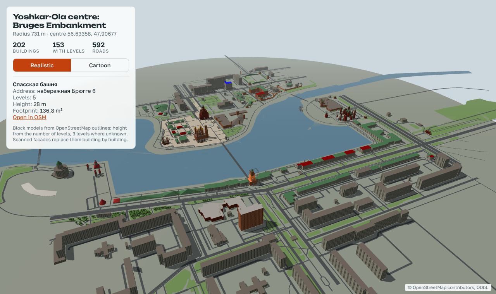
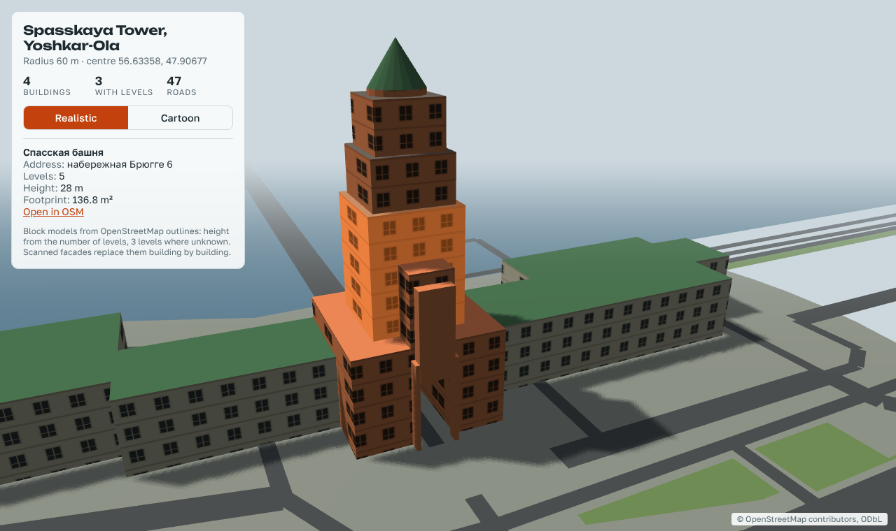
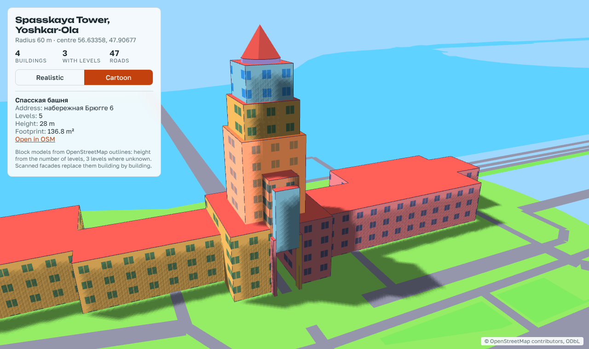
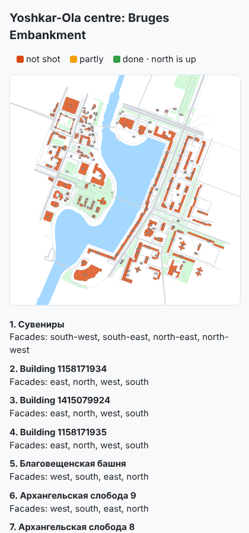

A universal, realistic map of a real place: every building is a separate model that knows its name and address, the landscape is shared and grows tile by tile, and your own photos and video raise the quality building by building.

A style is a project on top of the map, not a change inside it. The realistic master stays accurate and keeps serving new work.


.glb for Unreal, Godot and Unity; USD for film and Omniverse.
In Claude Code:
/plugin marketplace add ildargiv/city3d-skill /plugin install city3d@city3d
Then say: “Build the district around … in 3D, radius 300 m”.
You will need Python 3.9+, Blender 4.2+, ffmpeg, and — for models from
your own frames — COLMAP and OpenMVS. doctor.py checks the machine and prints the
download links.